面积可以直观地解释为平面图形所占据区域的大小。选择用边长为1厘米的正方形作为单位正方形来衡量面积大小，规定单位正方形的面积是1平方厘米。长为5厘米，宽为3厘米的长方形可以分成5×3=15个单位正方形。
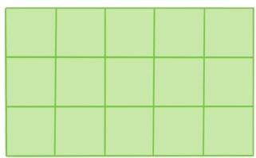
因此，长为5厘米，宽为3厘米的长方形的面积就是5×3=15平方厘米。根据同样的道理，长和宽都是整数厘米的长方形的面积都是等于长乘宽。数学课本中常常由此直接给出结论：
所有长方形的面积都是等于长乘宽
但是许多长方形的长和宽并不是整数，所以难免有好奇心强的学生会问：
问题30：为什么长方形的面积是等于长乘宽？
其实长和宽都是分数的长方形的面积也是等于长乘宽。例如考虑长和宽分别是 厘米和 厘米的小长方形。长和宽分别是8厘米和4厘米的大长方形的面积是8×4平方厘米。如果将大长方形的长3等分，宽7等分，就会将大长方形平均分成3×7个小长方形。因此小长方形的面积就是平方厘米。
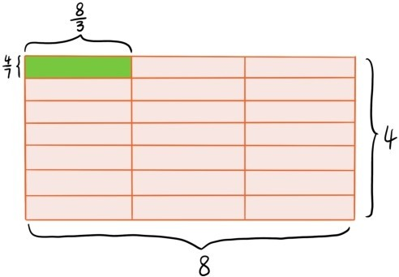
两组对边都平行的四边形称为平行四边形。过一条边的顶点作对边的垂线，顶点到垂足的线段称为对边的高。
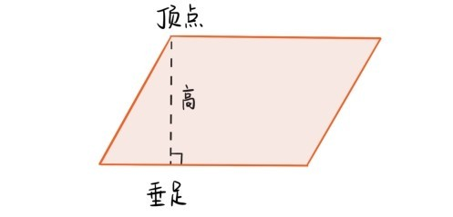
如何计算平行四边形的面积呢？数学课本中往往会通过割补的办法给出
平行四边形的面积=底×高
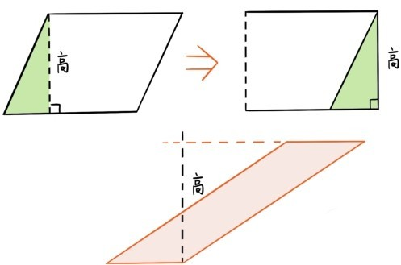
但是对于又细长又倾斜的平行四边形，这种方法就无效了，因为简单的切割补不成一个长方形。如果有学生发现了这个问题，可能就会问：
问题31：为什么所有平行四边形的面积总是等于底×高？
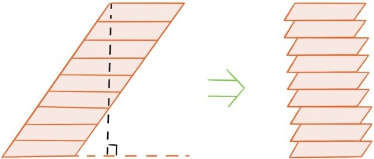
如果把平行四边形沿水平方向平均分割成相等的许多份，然后让它们竖直地对齐，分割的份数越多，形成的图形就越逼近一个长方形，长方形的长和宽分别等于原先平行四边形的高和底。所以可以认为平行四边形的面积等于底×高。问题31刚回答完，新的问题又来了，平行四边形有两组对边，所以有两种高，所以也有两种计算面积的方式。
问题32：两种计算平行四边形面积的方式得到的结果总是一样的吗？
先跳过这个问题。接下来考虑三角形的面积。过三角形的一个顶点做对边的垂线，顶点到垂足的线段称为对边的高。
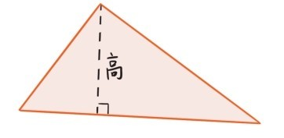
注意两个形状相同的三角形可以拼成一个平行四边形，这时三角形的高正是平行四边形的高，由此可以得出
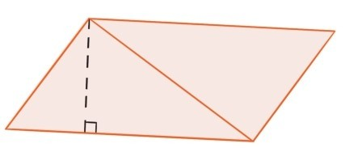
和平行四边形类似，三角形有3条边，对应着3条高，所以有3种计算面积的方式，所以也可以提类似的问题：
问题33：3种计算三角形面积的方式得到的结果总是一样的吗？
例如，会不会碰到这样的三角形，一条边和对应的高分别是7和5，另一条边和对应的高都是6，这时用两种方法计算出来的面积就是
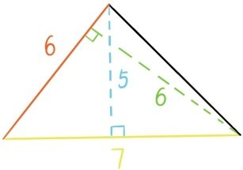
问题32与33留给读者自己思考。接下来考虑梯形的面积。梯形是指只有一组对边平行的四边形。两条平行边较短的称为上底，较长的称为下底。过上底的顶点作下底的垂线，顶点到垂足的线段称为梯形的高。
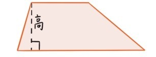
两个形状相同的梯形可以拼成一个平行四边形，这时梯形的高变成平行四边形的高，平行四边形的底等于梯形上底加下底。
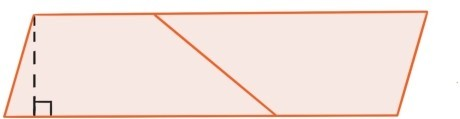
由此可以得出
最后考虑如何求多边形的面积。这个问题看似很简单，因为每个多边形都可以剖分为几个三角形，只需利用三角形面积公式求出这几个三角形面积，然后相加就得到多边形的面积。
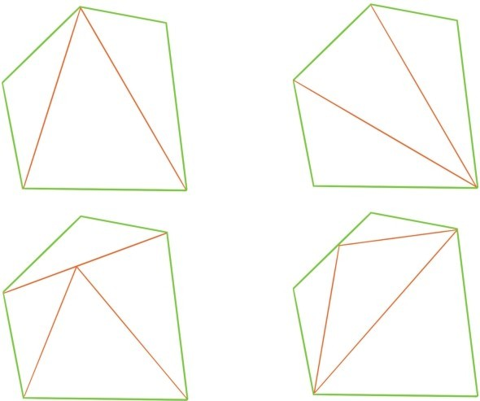
但是，同一个多边形，可以有许多种方式剖分成若干个三角形。所以问题又来了：
问题34：一个多边形用不同方式剖分成若干个三角形，所求出的三角形的面积之和总会相等吗？
提问时间
2.3.1 判断下面两个图形的面积是否相等？
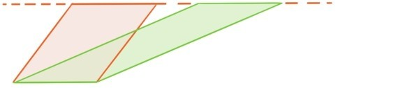
2.3.2 求下列两个三角形的面积（所标的长度单位都是厘米）。
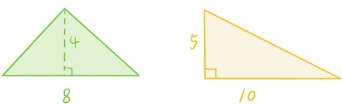
2.3.3 请思考三角形面积公式、平行四边形面积公式与梯形面积公式之间的关联。